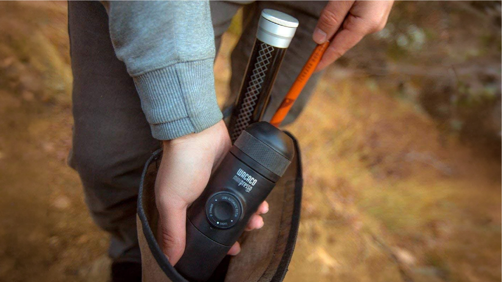
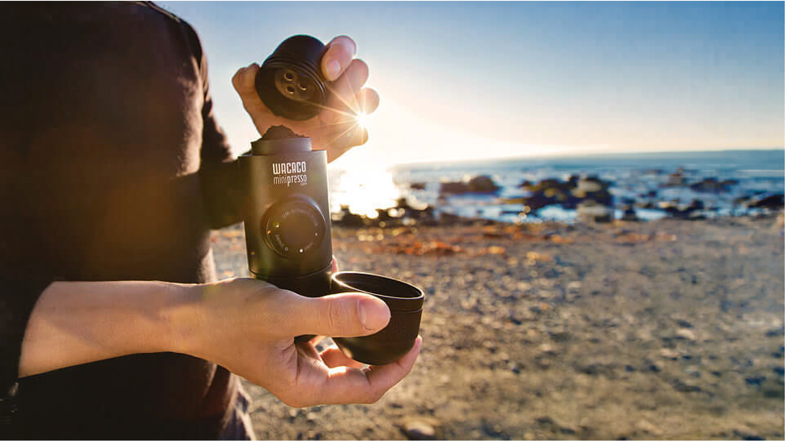
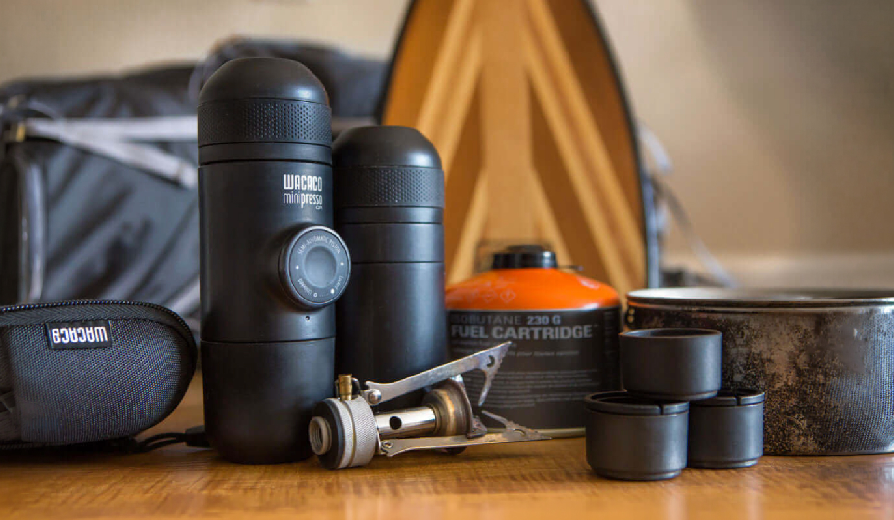
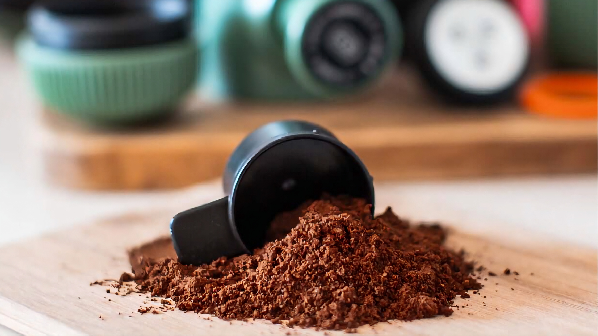
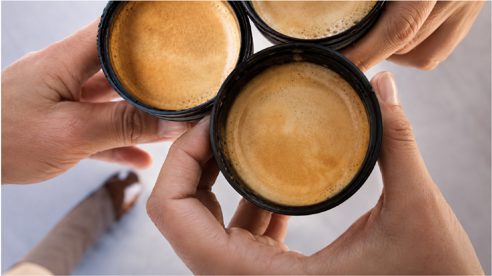
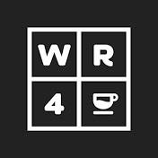

Cómo funciona
Sin vueltas, sin límites.
Compacta, manual y lista para acompañarte.
Cargá
Café molido y agua caliente. Nada más.
Presioná
Sistema manual, sin enchufes ni baterías.
Disfrutá
Espresso donde decidas hacer una pausa.
Beneficios
Diseñada para quien no negocia el café.
Compacta para mochila, valija o kit de ruta. Siempre lista para acompañarte sin ocupar espacio de más.
Sistema manual que no requiere batería ni electricidad. Café donde quieras, sin depender de enchufes.
Compatible con café molido para ajustar origen, molienda e intensidad según tu forma de preparar espresso.
Una extracción intensa y crema natural en un formato pensado para acompañarte a cualquier lugar.
Transforma cualquier lugar en un momento de café. Porque el ritual sigue siendo el mismo, aunque el paisaje cambie.





LLEVÁ EL CAFÉ. QUEDATE CON EL MOMENTO.
Especificaciones
Lo esencial, listo para salir.
Accesorios
Ampliá tus
posibilidades.
Comunidad
Pausas que se recuerdan.
Brodie Vissers
Trekking & café outdoor
“Una pausa simple después de cada subida.”Ver experiencia
MokaBees
Ruta & vanlife
“Café real, incluso lejos de casa.”Ver experiencia

WE R 4 CR
Baristas viajeros
“Molido propio, preparación propia, lugar propio.”Ver experiencia
Listo para salir
Hace que tu proxima ruta empiece con un espresso.
Minipresso GR entra en tu mochila y en tu manera de viajar: simple, precisa y siempre cerca de una buena pausa.
Comprar ahora